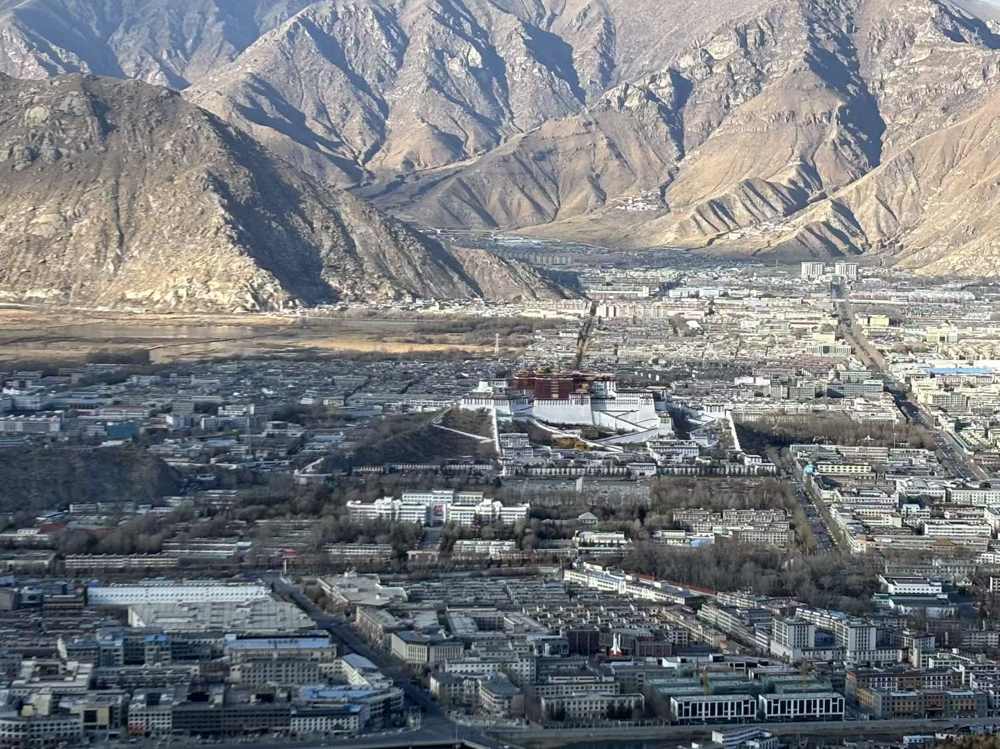

旅行体験

2024年の年初に、家族と一緒にチベットのラサへ旅行に行きました。 ラサは標高が約3,600メートルと非常に高く、到着した直後は少し息苦しさを感じ、高地に来たことを実感しました。 その中で、特に印象に残っているのが、南山公園への登山です。 この山の頂上は標高約4,000メートルに位置しており、普段とはまったく違う環境の中での挑戦となりました。 登り始めてしばらくすると、酸素の薄さの影響で少し歩くだけでも息が上がり、途中で何度も休憩を取りながら進みました。 それでも、家族と励まし合いながら一歩一歩進み、ついに頂上までたどり着くことができました。 山頂からはラサの街全体を見渡すことができ、遠くにはポタラ宮も見え、その壮大な景色にとても感動しました。 この旅行は、ただの観光ではなく、自分にとって忘れられない挑戦の体験となりました